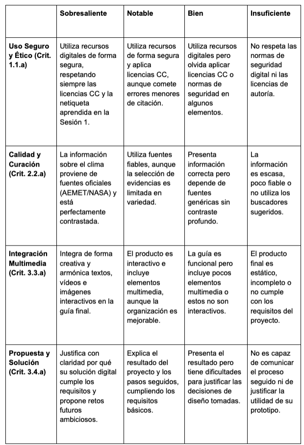
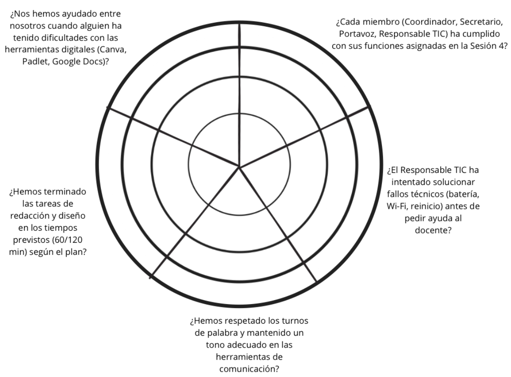

Texto
1. Introducción y estrategia de evaluación
Para este proyecto de 5º de Primaria, se propone una evaluación continua y formativa basada en la triangulación de datos. Utilizaremos tres fuentes: la observación docente, la valoración de los compañeros y el análisis del producto final, automatizando la recogida de datos mediante herramientas digitales del centro (Google Workspace/Canva).
2. Instrumentos de evaluación
Instrumento 1: Rúbrica Analítica Digital (Producto Final en Canva)
- Qué evalúa: el producto final (Guía Digital Interactiva), centrándose en el Criterio de Evaluación 1.1.a (Uso seguro y creativo de recursos digitales).
- Momento: evaluación sumativa y formativa al finalizar las sesiones 6 y 7.
- Variables y Tratamiento de Datos:
- Variables: nivel de integración multimedia, respeto a licencias CC, calidad del contenido climático y originalidad.
- Tratamiento: los datos se recogen a través de una rúbrica integrada en Google Classroom. Esto permite automatizar la devolución de feedback, enviando al alumnado comentarios específicos sobre sus puntos fuertes y áreas de mejora de forma inmediata.

Instrumento 2: Diana de Evaluación Cooperativa (Coevaluación)
- Qué evalúa: el desempeño de los roles (Coordinador, Secretario, Portavoz, Responsable TIC) y la netiqueta.
- Momento: al finalizar la Sesión 4 (Redacción) y la Sesión 8 (Gala).
- Funcionamiento: cada grupo completa una diana digital (creada en Genially o similar) donde valoran del 1 al 4 aspectos como: "¿Ha cumplido el Responsable TIC con el protocolo de resolución de problemas?" o "¿Hemos respetado los turnos de palabra en Teams/Classroom?".
- Variables y análisis: si detectamos una variable de "baja implicación" en un rol específico, los datos nos sirven para reajustar los agrupamientos en futuros proyectos o realizar una intervención directa de refuerzo en la competencia ciudadana digital.

Instrumento 3: Cuestionario de Autoevaluación y Reflexión (Google Forms)
- Qué evalúa: el proceso de aprendizaje, la metacognición y la resolución de problemas técnicos (basado en el Protocolo de Incidencias de la Sesión 4).
- Momento: sesión 8 (Cierre).
- Análisis crítico: más allá de la nota, los datos recogidos en la hoja de cálculo vinculada nos permiten analizar gráficamente si el alumnado se siente autónomo resolviendo fallos técnicos o si aún dependen del docente. Esto valida si la estrategia de "Protocolos de Autonomía" ha sido efectiva.
3. Análisis de Variables y Validación de Datos
Para garantizar la fiabilidad del proceso, aplicaremos los siguientes procedimientos digitales:
- Automatización: los resultados del cuestionario (Forms) y la rúbrica (Classroom) se consolidan en un Panel de Control (Dashboard) en Google Sheets. Esto permite visualizar el progreso de cada alumno/a en tiempo real.
- Gestión de variables: en caso de inestabilidad de la red, si un alumno no puede completar el cuestionario digital, se dispone de la versión analógica para posterior volcado manual, garantizando que el almacenamiento de datos sea íntegro.
- Feedback y mejora: los datos no solo califican; sirven para que el docente ajuste la dificultad de las fuentes de información en el Padlet de Curación si se observa que el alumnado ha tenido dificultades críticas en la filtración.